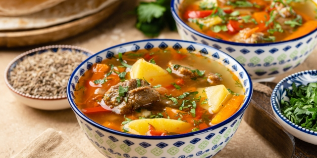

Шурпа узбекская
 3 часа 30 минут
3 часа 30 минут
 6 порций
6 порций
76.75 ккалорий
К ее величеству Шурпе нужно подходить с любовью и приоритетом. И тогда она подарит вам нечто большее, чем вкус и аромат. А ведь случается, что кто-то приготовит суп из баранины, лука, моркови, картофеля и помидоров и говорит: «Это шурпа». И как не отсохнет его язык в этот момент? Мы-то с вами знаем, что такое настоящая шурпа. Если нет, то сейчас узнаем, а потом вновь и вновь будем открывать книгу на этой странице, чтобы приготовить несравненную узбекскую шурпу.
Ингредиенты
- Баранина 600–700 г
- Вода 2500 мл
- Картофель 3–4 штуки
- Морковь 1 штука
- Болгарские перцы 2 штуки
- Репчатый лук 2 штуки
- Помидоры 2 штуки
- Чеснок 5 зубчиков
- Соль по вкусу
- Перец чёрный молотый ½ ч. ложки
- Молотый кориандр ½ ч. ложки
- Молотая зира 1 ч. ложка
Приготовление
- Баранину нарежьте крупными кусочками. Сложите в кастрюлю, залейте холодной водой и доведите до кипения. Снимите пену с поверхности.
- Варите мясо на небольшом огне примерно полтора часа.
- Картошку, морковь, перец и одну луковицу нарежьте крупными кусочками, вторую луковицу и помидоры — небольшими. Чеснок измельчите ножом.
- Добавьте в кастрюлю лук, морковь, помидоры и болгарский перец. Вновь снимите пену с поверхности.
- Выложите картошку и варите шурпу ещё 25–30 минут.
- Блюдо готово! Можете насыпать зелени по вкусу и наслаждаться шурпой!